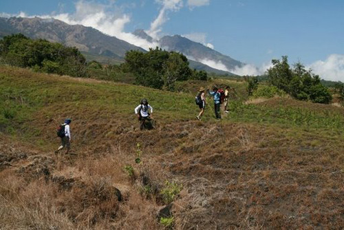
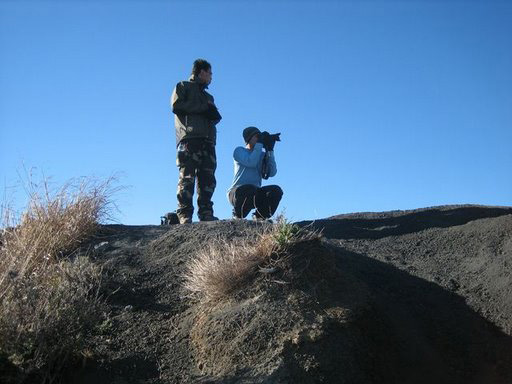
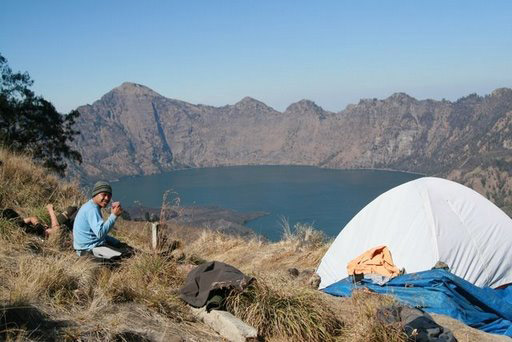
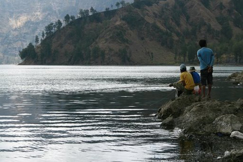
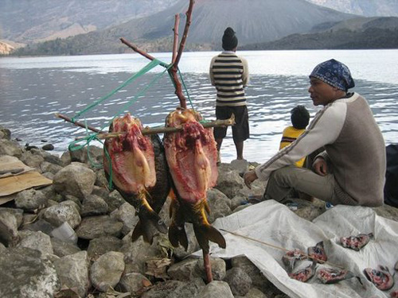

Perjalanan Nuri ke gunung api Rinjani
Nuri, whose biodata you have already seen, has posted a photo album from his recent Lombok holiday on his website. Before you look at it, there are a few new words to learn. Look at these auxiliary verbs (helping verbs that come before the main verb) and the sequencing words and time indicators that help the story flow.
| Auxiliary verbs | |
|---|---|
| sempat | have the opportunity |
| bisa | can |
| harus | have to |
| mau | want to |
| tidak usah | not necessary |
| akan | will |
| Sequencing words and time indicators | |
|---|---|
| lalu | then |
| jadi | so |
| pada bulan Januari | in January |
| akhirnya | finally |
| sudah waktu | it was already time to |
| akhirnya | finally |
| sebelum | before |
| sesudah | after |
Fill out the worksheet with information from Nuri’s photo-blog.
|  |
Pada bulan Januari, saya sempat pergi ke Lombok dengan teman saya. Tujuan kami adalah mendaki gunung Rinjani. Saya senang sekali berkesempatan mendaki gunung ini yang tingginya 3726 meter. Kami harus berjalan kaki karena tidak bisa naik dengan motor. |
|  |
Saya suka sekali memotret, jadi saya membawa kamera baru saya yang cukup baik. Pemandangannya view bagus dan banyak obyek menarik. Misalnya ... |
|
Monyet! Kami melihat banyak monyet kecil yang lucu di sana. Monyet itu suka makan kacang. |
|  |
Kami berjalan kaki ke puncak Rinjani. Perjalanannya makan waktu 3 1/2 hari, jadi kami harus berkemah di puncak. Akan tetapi ada danau yang indah sekali di puncak – wah pemandangannya luar biasa. |
|  |
Kami memancing di danau. Saya senang sekali memancing. Ada banyak ikan, jadi tidak usah membawa daging, hanya nasi yang harus kami bawa. |
|  |
Kami menangkap empat ikan yang besar. Ikan itu kami bakar di api, sebelum makan. Enak sekali. Akhirnya sudah waktu pulang. Saya tidak mau pulang, tapi harus. |
All photographs reproduced with the permission of Agus Suyanto.
Now read about Tidak! in the pojok budaya.